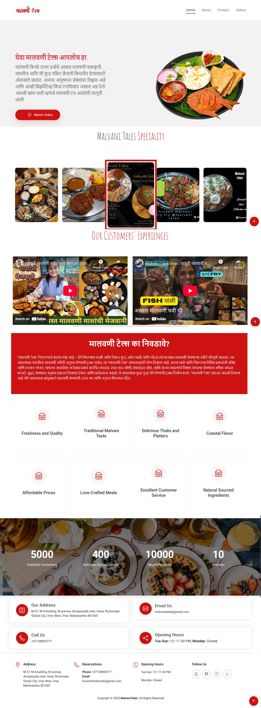

Malvani Tales Restaurant

Project Resources
URL :- Click Here
The Malvani Tales Restaurant Portfolio Website is a visually captivating and user-friendly platform that showcases the rich flavors of Malvani cuisine. Built using JavaScript, jQuery, Bootstrap, HTML, and CSS, the website highlights the restaurant’s ambiance, food culture, and customer experiences through an engaging digital presence.
Key Features
Modern & Responsive Design – Developed using Bootstrap 5, ensuring seamless adaptability across desktops, tablets, and mobile devices.
Image & Video Gallery – Showcases high-quality images and promotional videos of the restaurant's ambiance, special dishes, and events.
Customer Testimonials – Displays real customer experiences with animated sliders and carousels, enhancing credibility and engagement.
Blog & Food Stories Section – Features articles and stories about Malvani cuisine, traditions, and chef insights to engage visitors.
Google Maps Integration – Embedded location map for easy navigation to the restaurant.
Social Media Integration – Direct links to restaurant’s Instagram, Facebook, and YouTube pages to boost engagement.
Technology Stack
- Frontend: HTML5, CSS3, Bootstrap 5
- Interactivity & Animations: JavaScript, jQuery
- Responsive Design: Bootstrap Grid System
- Content Display: Bootstrap Carousel, Modal, and Grid Layout
- Google Maps API: Used for location display
Outcome & Impact
The Malvani Tales website enhances the restaurant's online presence by offering an immersive experience that attracts food enthusiasts, strengthens brand identity, and fosters community engagement.